Справочник по системному программированию · модуль 2 · лабораторная работа
ЛР 9
Разбор
падения
Программа на C с тремя ошибками памяти: одна убивает процесс, две другие проходят молча и портят данные. В работе видно, как система сообщает о падении и где его записывает, почему Python падает вместе с кодом на C, который вызывает, и как AddressSanitizer превращает молчаливую ошибку в отчёт с номером строки.
- Пара
- 9
- Время
- 35–40 минут
- Программы
- MSVC (
cl), PowerShellclang, Терминалgcc, терминал, Python, AddressSanitizer - Сдать
report.mdи 4 снимка вscreenshots/в папкеlabs/09-crashрепозиторияsysprog-start
§1Подготовка
Нужны компилятор C из модуля 1 и Python. AddressSanitizer входит в MSVC и включается ключом /fsanitize=address на компьютерах с x64. На компьютере с ARM этот ключ компилятор пропускает, и проверку в шагах 4–5 заменяет вывод с x64 в конце хода работы.AddressSanitizer входит в clang из Command Line Tools.AddressSanitizer входит в gcc; если сборка с -fsanitize=address пишет, что нет libasan, поставьте её: sudo apt install libasan8. В шаблоне в папке labs/09-crash лежат бланк, папка screenshots/ и две программы. Главная — crash.c:
#include <stdio.h> #include <stdlib.h> #include <string.h> static void null_write(void) { int *p = NULL; printf("writing to address %p\n", (void *)p); *p = 42; printf("not reached\n"); } static void overflow(void) { struct { int data[4]; int limit; } s = {{0, 0, 0, 0}, 100}; printf("limit before: %d\n", s.limit); for (int i = 0; i <= 4; i++) s.data[i] = 7; printf("limit after: %d\n", s.limit); } static void heap_overflow(void) { int *data = malloc(4 * sizeof(int)); int i; for (i = 0; i <= 4; i++) data[i] = 7; printf("wrote %d numbers into room for 4\n", i); free(data); } static void use_after_free(void) { char *name = malloc(16); strcpy(name, "agent"); free(name); printf("name after free: %s\n", name); } int main(int argc, char *argv[]) { const char *mode = argc > 1 ? argv[1] : ""; if (strcmp(mode, "null") == 0) null_write(); else if (strcmp(mode, "overflow") == 0) overflow(); else if (strcmp(mode, "heap") == 0) heap_overflow(); else if (strcmp(mode, "uaf") == 0) use_after_free(); else { printf("usage: crash null|overflow|heap|uaf\n"); return 1; } return 0; }
Четыре функции, по одной на ошибку, выбираются словом в командной строке. null_write пишет по пустому указателю. overflow пишет пять чисел в массив data на четыре, а за массивом в той же структуре лежит limit. heap_overflow делает то же с памятью из malloc. use_after_free освобождает строку и печатает её. Вторая программа, ctypes_crash.py, пишет по адресу 0 из Python через ctypes:
import ctypes import faulthandler def save(address): ctypes.memset(address, 0, 8) faulthandler.enable() print("writing 8 bytes to address 0", flush=True) save(0) print("not reached")
faulthandler.enable() велит Python при падении напечатать, на какой строке Python он был.
Вверху шага — действие. Ниже — кадр экрана после действия; красные рамки отмечают места, о которых идёт речь. Слева под кадром — что на нём видно, справа — что изменилось. Строка «В отчёт» — что записать в report.md. Адреса в отчётах у вас будут другими, а номера строк — те же.
§2Три ошибки памяти
Процесс может работать только с той памятью, которую ему выдала система. Попытка обратиться к памяти, которой у процесса нет, — например, по адресу 0, — падение: процессор останавливает команду, и система завершает процесс. Но большинство ошибок памяти падения не вызывают: запись за границу массива попадает в соседнюю переменную того же процесса, и это разрешено.
Как пятая запись портит соседнюю переменную
| data[0] | data[1] | data[2] | data[3] | limit | |
|---|---|---|---|---|---|
| до цикла | 0 | 0 | 0 | 0 | 100 |
| после i ≤ 4 | 7 | 7 | 7 | 7 | 7 |
Поля структуры лежат подряд, по 4 байта. Места у массива на 4 числа; запись data[4] попадает в следующие 4 байта — в limit.
Слева — четыре ячейки массива, справа — limit. После цикла с условием i <= 4 пятая семёрка лежит там, где было 100. Такие ошибки ловит AddressSanitizer — проверка, которую компилятор встраивает в программу по ключу -fsanitize=address: перед каждым обращением к памяти программа проверяет, своё ли это место. Что видно с проверкой и без неё:
Три ошибки памяти: что видно без проверки и с AddressSanitizer
| Ошибка | Без проверки | С AddressSanitizer |
|---|---|---|
| запись по адресу 0 | процесс убит системой | то же |
| запись за границу | работает, данные испорчены | отчёт и остановка |
| чтение после free | работает, печатает мусор | отчёт и остановка |
Розовое — ошибка без сообщения об ошибке или смерть процесса. AddressSanitizer — проверка памяти, которую компилятор встраивает в программу.
Первая строка — шаги 1–2, вторая — шаги 3–4, третья — шаг 5. Шаг 6 показывает, как проверка подтверждает исправление.
Что происходит при записи по адресу 0
Память процесса — длинный коридор с дверями-страницами. Самая первая дверь, с номером 0, заколочена специально: туда ходят только по ошибке, когда указатель забыли заполнить. Процесс пытается войти — процессор поднимает тревогу, система приходит и выводит процесс из здания.
Код 139 — это «выведен за попытку войти в чужую дверь»: 128 значит «убит сигналом», 11 — номер сигнала SIGSEGV. В Windows то же называется кодом 0xC0000005.
программа
*p = 42p = NULL, адрес 0процессор
страницы 0 неттревогасистема
убивает процесскод 139 / 0xC0000005Что есть что. Заколоченная дверь — нулевая страница, которую система не отдаёт ни одному процессу. Тревога — исключение процессора, вывод из здания — сигнал SIGSEGV.
§3Ход работы
-
Уроните программуВ папке
labs/09-crashсоберите программу:cl /nologo /Zi /W4 crash.c. Выполнитеcrash.exe null: функцияnull_writeзаписывает число по пустому указателю. Затемecho %errorlevel%— код завершения.Уроните программуВ папкеlabs/09-crashсоберите программу:clang -g -O0 -Wall -Wextra -o crash crash.c. Выполните./crash null: функцияnull_writeзаписывает число по пустому указателю. Затемecho $?— код завершения.Уроните программуВ папкеlabs/09-crashсоберите программу:gcc -g -O0 -Wall -Wextra -o crash crash.c. Выполните./crash null: функцияnull_writeзаписывает число по пустому указателю. Затемecho $?— код завершения.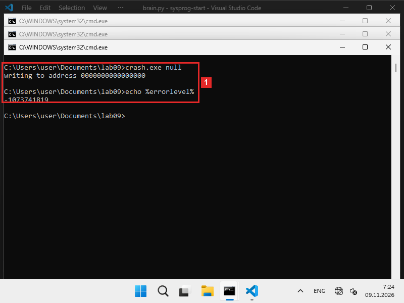
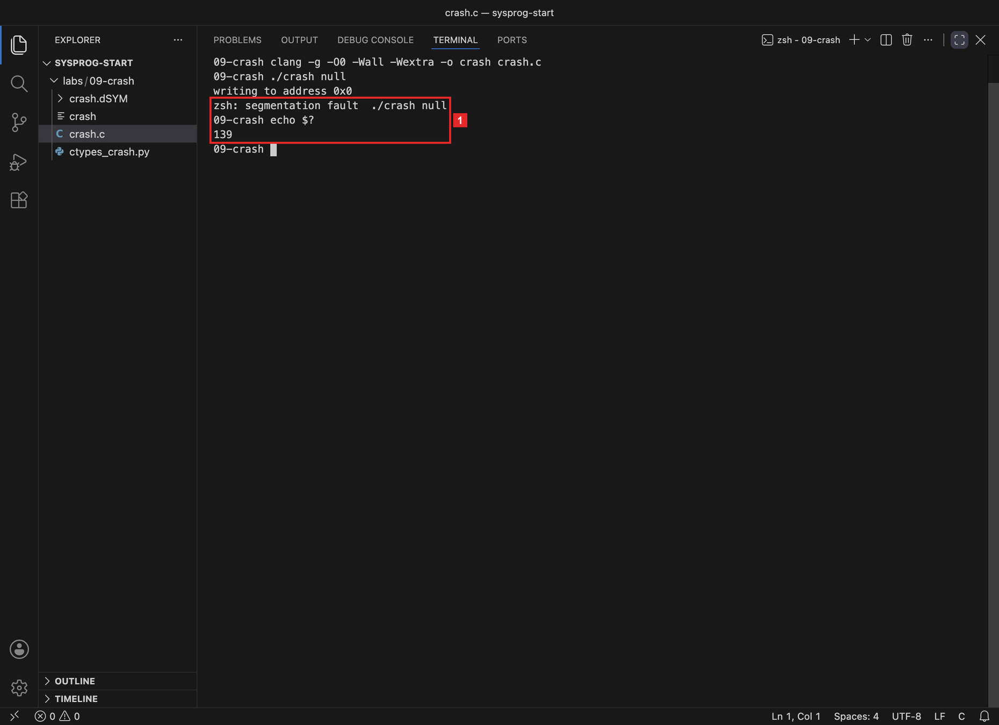
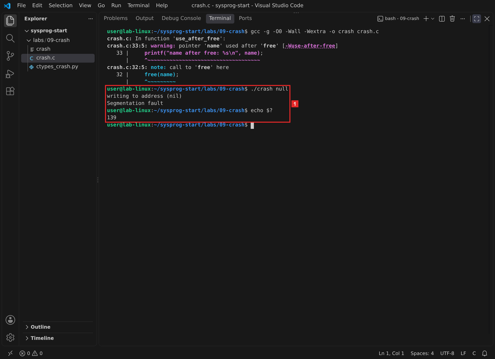
Что на кадре1 — программа напечатала адрес
0000000000000000, строкиnot reachedнет; код завершения −1073741819.Что изменилосьСообщения о падении командная строка не печатает, оно видно только по коду. −1073741819 — это 0xC0000005, «нарушение доступа»: процесс обратился к памяти, которой у него нет.
Что на кадре1 —
writing to address 0x0, затемzsh: segmentation fault ./crash nullи код 139.Что изменилосьСистема убила процесс сигналом SIGSEGV, номер 11. Оболочка сообщила об этом и записала код 128 + 11 = 139.
Что на кадреВыше — предупреждение gcc:
pointer 'name' used after 'free'в строке 33 — оно пригодится в шаге 5. 1 —writing to address (nil),Segmentation fault, код 139.Что изменилосьСистема убила процесс сигналом SIGSEGV, номер 11, а оболочка записала код 128 + 11 = 139.
В отчёт. что напечатала программа и код завершения.
Снимок в отчёт · 01 Сохраните окно как
screenshots/01_crash.png. На снимке должно быть видно: запуск crash null и код завершения. -
Уроните Python и найдите запись о паденииВыполните
python ctypes_crash.py: программа черезctypesпишет 8 байт по адресу 0. Затем выполнитеpowershell -c "Get-WinEvent -FilterHashtable @{LogName='Application';Id=1000} -MaxEvents 1 | Select -Expand Message"
— последнее событие 1000 «Сбой приложения» из журнала Windows.Уроните Python и найдите запись о паденииВыполнитеpython3 ctypes_crash.py 2>&1 | head -6: программа черезctypesпишет 8 байт по адресу 0,head -6оставляет начало сообщения. Затем выполнитеgrep -o '"exception"[^}]*}' $(ls -t ~/Library/Logs/DiagnosticReports/crash-* | head -1)
— причина из последнего отчёта о падении программыcrash.Уроните PythonВыполнитеpython3 ctypes_crash.py 2>&1 | head -6: программа черезctypesпишет 8 байт по адресу 0,head -6оставляет начало сообщения.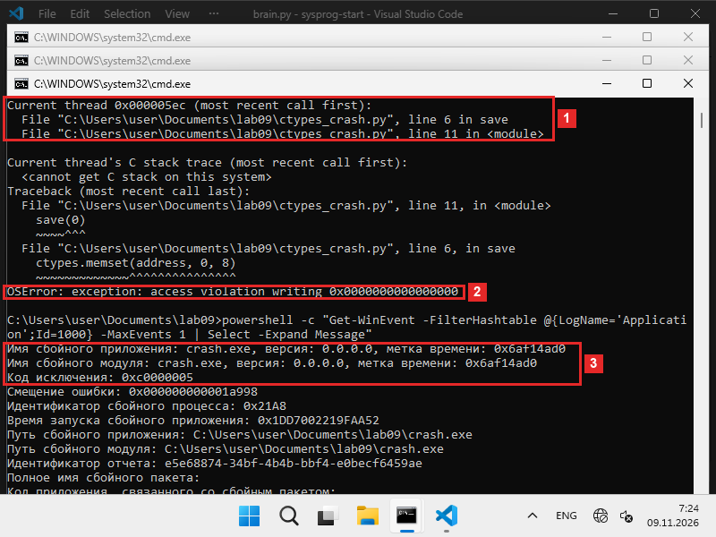
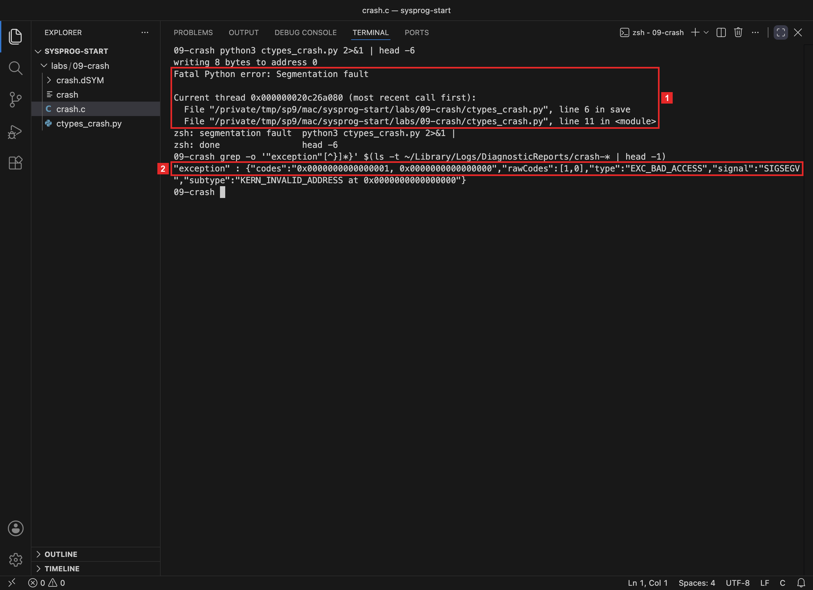
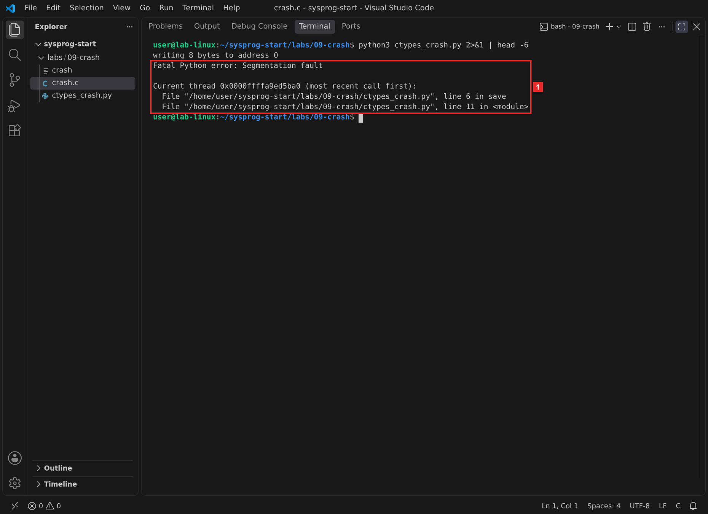
Что на кадре1 — стек Python от
faulthandler: строка 6 вsave, строка 11. 2 —OSError: exception: access violation writing 0x0000000000000000. 3 — событие журнала: сбойное приложениеcrash.exe, код исключения0xc0000005.Что изменилосьВ Windows Python пережил ошибку:
ctypesперехватил нарушение доступа и превратил его в исключениеOSError, которое можно поймать вtry. А падениеcrash.exeиз шага 1 Windows записала в журнал «Приложение» с тем же кодом 0xC0000005.Что на кадре1 —
Fatal Python error: Segmentation faultи стек Python: строка 6 вsave, строка 11. 2 — из отчёта:"type":"EXC_BAD_ACCESS","signal":"SIGSEGV","subtype":"KERN_INVALID_ADDRESS at 0x0000000000000000".Что изменилосьPython упал так же, как программа на C, но
faulthandlerуспел напечатать, в какой строке Python это случилось. macOS после каждого падения пишет отчёт: причина — неверный адрес 0.Что на кадре1 —
Fatal Python error: Segmentation faultи стек Python: строка 6 вsave, строка 11 в<module>.Что изменилосьPython упал так же, как программа на C: ошибка внутри
ctypesубивает весь процесс.faulthandler.enable()успел напечатать, на какой строке Python это случилось, — без него было бы толькоSegmentation fault.В отчёт. что напечатал Python и где система записала падение.
Снимок в отчёт · 02 Сохраните окно как
screenshots/02_python_crash.png. На снимке должно быть видно: вывод ctypes_crash.py и запись системы о падении. -
Запишите за границу массиваВыполните
crash.exe overflowи снова посмотрите код завершения. Функцияoverflowпишет пять чисел в массив на четыре.Запишите за границу массиваВыполните./crash overflowи снова посмотрите код завершения. Функцияoverflowпишет пять чисел в массив на четыре.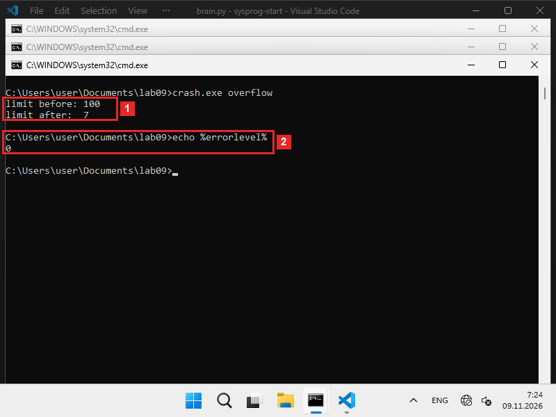
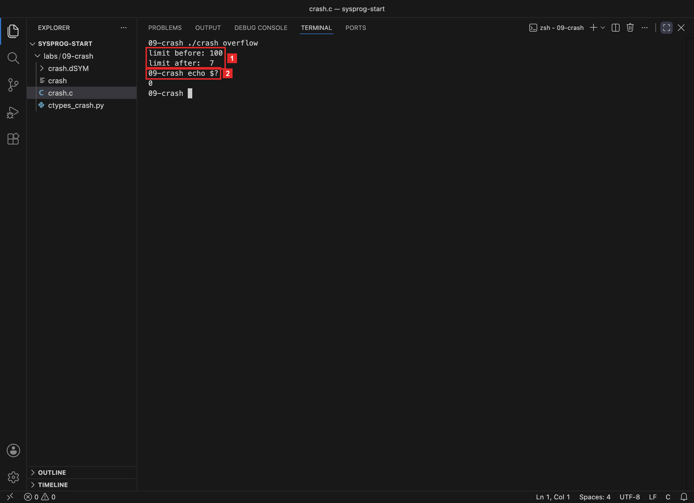
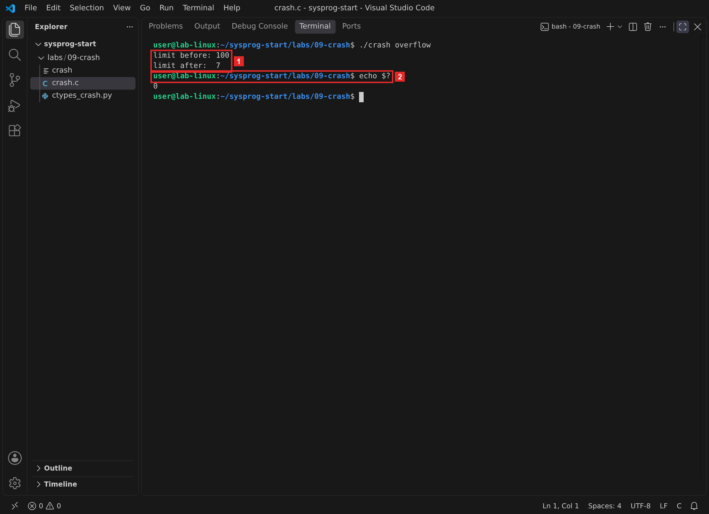
Что на кадре1 —
limit before: 100,limit after: 7. 2 — код завершения 0.Что изменилосьПрограмма не упала и сообщила об успехе. При этом переменная
limit, которую никто не трогал, стала 7. Это хуже падения: ошибка тихо испортила данные.В отчёт. значение limit до и после и код завершения.
-
Включите AddressSanitizerВыполните
crash.exe heap: функцияheap_overflowпишет пять чисел в память, выделеннуюmallocна четыре. Затем соберите программу с проверкой:cl /nologo /Zi /fsanitize=address crash.c /Fe:crash_asan.exeи выполнитеcrash_asan.exe heap. Ключ/fsanitize=addressработает на компьютерах с x64; на ARM компилятор Microsoft его пропускает с предупреждением D9002 — тогда смотрите вывод ниже, после хода работы.Включите AddressSanitizerВыполните./crash heap: функцияheap_overflowпишет пять чисел в память, выделеннуюmallocна четыре. Затем соберите программу с проверкой:clang -g -O0 -fsanitize=address -o crash_asan crash.cи выполните./crash_asan heap 2>&1 | head -8.Включите AddressSanitizerВыполните./crash heap: функцияheap_overflowпишет пять чисел в память, выделеннуюmallocна четыре. Затем соберите программу с проверкой:gcc -g -O0 -fsanitize=address -o crash_asan crash.cи выполните./crash_asan heap 2>&1 | head -8.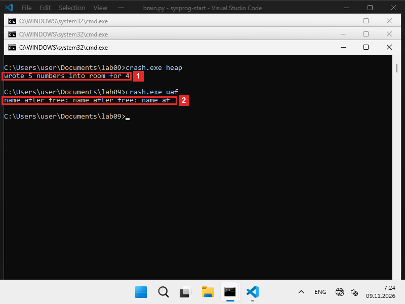
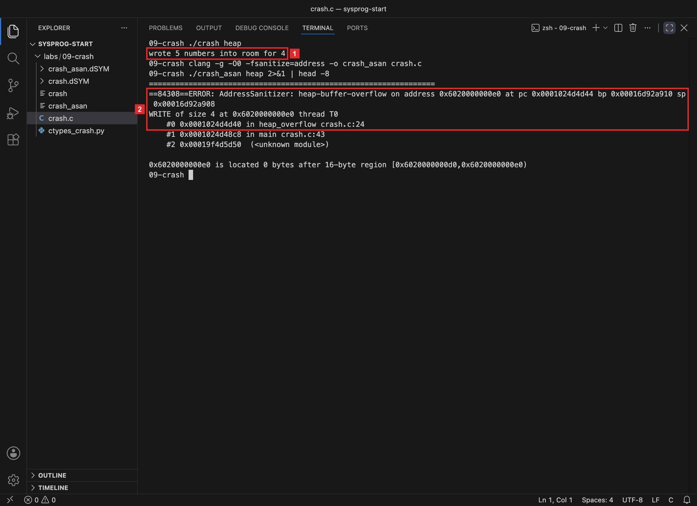
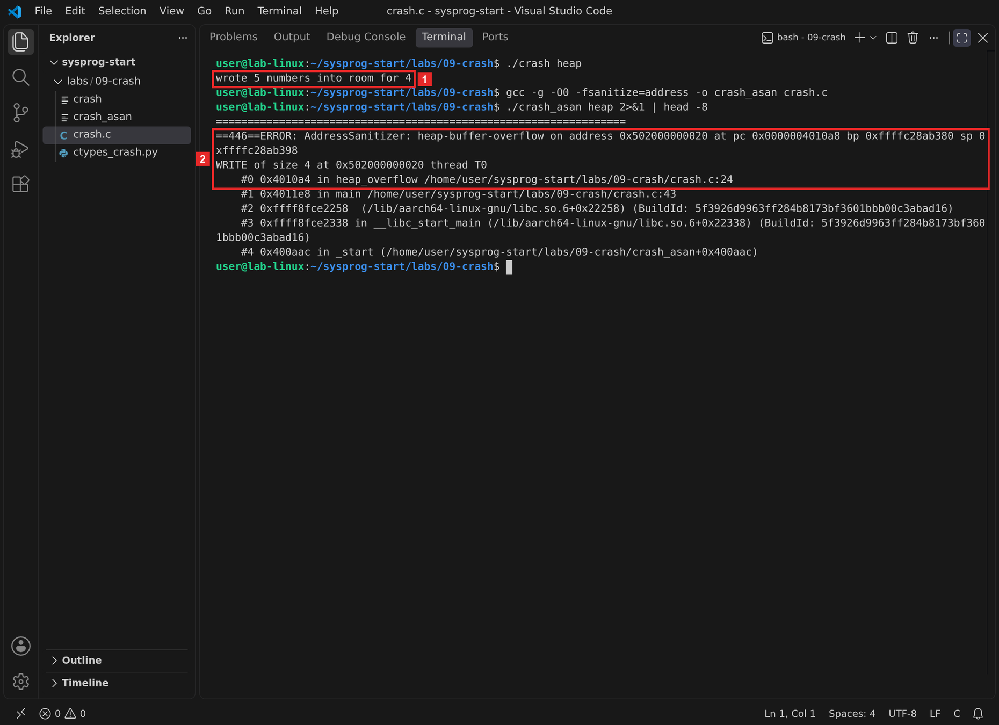
Что на кадреКадр — компьютер с ARM, проверки нет. 1 —
wrote 5 numbers into room for 4: программа не заметила ошибки. На x64crash_asan.exe heapпечатаетERROR: AddressSanitizer: heap-buffer-overflow,WRITE of size 4и строкуcrash.c:24— вывод ниже, после хода работы.Что изменилосьБез проверки запись за границу кучи проходит молча, как в шаге 3. AddressSanitizer останавливает программу на первой же лишней записи и называет строку.
Что на кадре1 — без проверки:
wrote 5 numbers into room for 4. 2 — с проверкой:ERROR: AddressSanitizer: heap-buffer-overflow,WRITE of size 4,in heap_overflow crash.c:24.Что изменилосьБез проверки ошибка прошла молча. С проверкой программа остановилась на лишней записи: 4 байта, строка 24 —
data[i] = 7приi = 4. Ниже в полном выводе: адрес находится «0 bytes after 16-byte region» — сразу за 16 байтами, которые выдалmalloc.Что на кадре1 — без проверки:
wrote 5 numbers into room for 4. 2 — с проверкой:ERROR: AddressSanitizer: heap-buffer-overflow,WRITE of size 4,in heap_overflow …/crash.c:24.Что изменилосьБез проверки ошибка прошла молча. С проверкой программа остановилась на лишней записи: 4 байта, строка 24 —
data[i] = 7приi = 4.В отчёт. что напечатала программа без проверки и с AddressSanitizer, какую строку он назвал.
Снимок в отчёт · 03 Сохраните окно как
screenshots/03_asan.png. На снимке должно быть видно: вывод crash heap без проверки и с AddressSanitizer (на Windows с ARM — без проверки). -
Найдите чтение освобождённой памятиВыполните
crash.exe uaf: функцияuse_after_freeосвобождает строку и потом печатает её. На x64 выполните такжеcrash_asan.exe uaf.Найдите чтение освобождённой памятиВыполните./crash_asan uaf 2>&1 | grep -E "ERROR|in use_after_free|freed by|in main" | head -6
Функцияuse_after_freeосвобождает строку и потом печатает её;grepоставляет главные строки отчёта.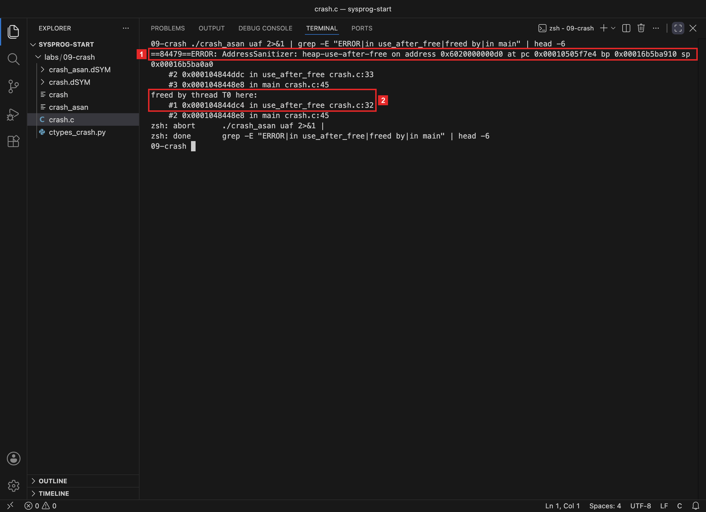
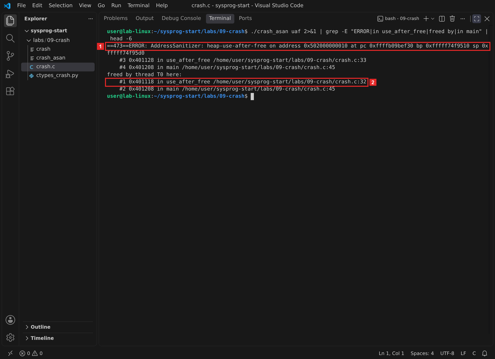
Что на кадреТот же кадр. 2 — без проверки:
name after free: name after free: name af— вместоagentнапечатан мусор. На x64 AddressSanitizer печатаетheap-use-after-free, обращение вcrash.c:33и освобождение вcrash.c:32.Что изменилосьОсвобождённую память куча уже отдала под другие данные — под текст самого
printf. Программа не упала и напечатала чужое.Что на кадре1 —
ERROR: AddressSanitizer: heap-use-after-free. 2 —freed by thread T0 here: память освобождена вuse_after_free crash.c:32; выше — обращение вcrash.c:33.Что изменилосьОтчёт называет обе строки: где память освободили (32,
free(name)) и где к ней обратились (33,printf). По ним ошибка находится без отладчика.Что на кадре1 —
ERROR: AddressSanitizer: heap-use-after-free; ниже — обращение вcrash.c:33. 2 — освобождено вuse_after_free …/crash.c:32.Что изменилосьОтчёт называет обе строки: где память освободили (32) и где к ней обратились (33). Ту же ошибку gcc заметил ещё при сборке в шаге 1 — предупреждение
-Wuse-after-free. Компилятор видит такие ошибки не всегда, проверка при запуске — надёжнее.В отчёт. какой вид ошибки назвал AddressSanitizer и какие две строки.
-
Исправьте и проверьтеВыполните
powershell -c "(gc crash.c) -replace 'i <= 4','i < 4' | sc crash_fixed.c": в копии оба цикла идут доi < 4. Затемfc crash.c crash_fixed.c, соберитеcl /nologo /Zi /W4 crash_fixed.cи выполнитеcrash_fixed.exe heapиcrash_fixed.exe overflow.Исправьте и проверьтеВыполнитеsed 's/i <= 4/i < 4/g' crash.c > crash_fixed.c: в копии оба цикла идут доi < 4. Затемdiff crash.c crash_fixed.c, соберите копию с проверкой:clang -g -O0 -fsanitize=address -o crash_fixed crash_fixed.cи выполните./crash_fixed heapи./crash_fixed overflow.Исправьте и проверьтеВыполнитеsed 's/i <= 4/i < 4/g' crash.c > crash_fixed.c: в копии оба цикла идут доi < 4. Затемdiff crash.c crash_fixed.c, соберите копию с проверкой:gcc -g -O0 -fsanitize=address -o crash_fixed crash_fixed.cи выполните./crash_fixed heapи./crash_fixed overflow.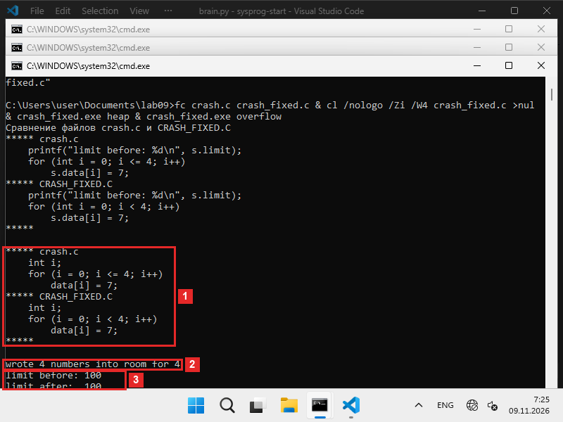
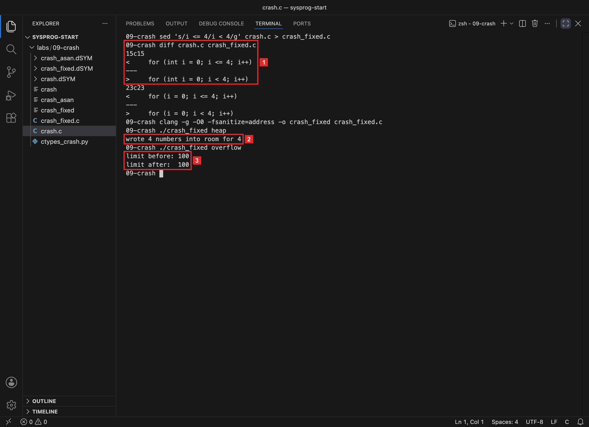
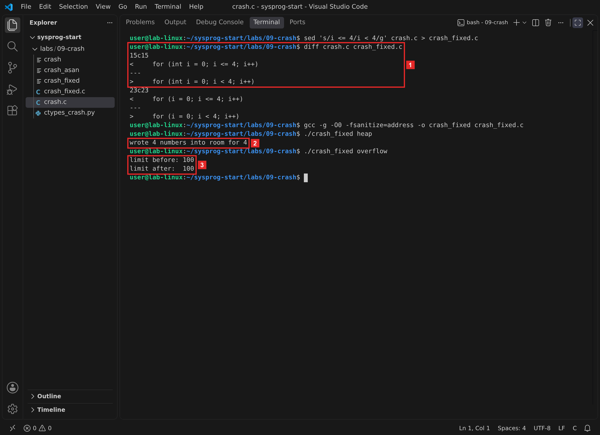
Что на кадре1 — разница файлов:
i <= 4заменено наi < 4. 2 —wrote 4 numbers into room for 4. 3 —limit before: 100,limit after: 100.Что изменилосьИсправленная программа пишет четыре числа и не трогает
limit. На x64 соберите её ещё и с/fsanitize=address: проверка должна промолчать. Так проверяют любое исправление: тот же запуск с проверкой, и отчёта нет.Что на кадре1 — разница файлов:
i <= 4заменено наi < 4. 2 —wrote 4 numbers into room for 4. 3 —limit before: 100,limit after: 100.Что изменилосьИсправленная программа пишет четыре числа и не трогает
limit. Собрана с AddressSanitizer — и он молчит: лишних записей больше нет. Так проверяют любое исправление: тот же запуск с проверкой, и отчёта нет.В отчёт. что изменилось в коде и что напечатала исправленная программа.
Снимок в отчёт · 04 Сохраните окно как
screenshots/04_fixed.png. На снимке должно быть видно: разница файлов и вывод исправленной программы.
=== heap
==9016==ERROR: AddressSanitizer: heap-buffer-overflow on address 0x129ab5fa01a0 at pc 0x7ff6c7081590 bp 0x00bdc9aff870 sp 0x00bdc9aff878
WRITE of size 4 at 0x129ab5fa01a0 thread T0
#0 0x7ff6c708158f in heap_overflow crash.c:24
=== uaf
#1 0x7ff6c7081519 in heap_overflow crash.c:21
SUMMARY: AddressSanitizer: heap-buffer-overflow crash.c:24 in heap_overflow
==9016==ABORTING
==904==ERROR: AddressSanitizer: heap-use-after-free on address 0x1244cc9a0190 at pc 0x7ffe5b47e546 bp 0x0074554ff6f0 sp 0x0074554fee90
READ of size 2 at 0x1244cc9a0190 thread T0
#12 0x7ff6c708160e in use_after_free crash.c:33
freed by thread T0 here:
#1 0x7ff6c70815fd in use_after_free crash.c:32
#1 0x7ff6c70815dd in use_after_free crash.c:30
SUMMARY: AddressSanitizer: heap-use-after-free minkernel\crts\ucrt\inc\corecrt_internal_stdio_output.h:2353 in __crt_stdio_output::output_processor<ch
==904==ABORTING
Почему запись за границу не падает
Комод с четырьмя ящиками для носков, а под ним — ящик с деньгами. Пятую пару носков засунули «в пятый ящик» — а пятого нет, следующий — ящик с деньгами. Носки легли поверх денег, и никто не закричал: ящик-то существует, дверь открыта.
Система ловит только попытку войти в чужую дверь. Соседняя переменная — своя память процесса, и запись туда разрешена. Поэтому программа работает дальше с испорченным limit = 7 — и узнают об этом, когда что-то сломается гораздо позже.
Что есть что. Ящики для носков — data[0..3], ящик с деньгами — limit, пятая пара — data[4] = 7.
Как AddressSanitizer находит ошибку
AddressSanitizer обтягивает каждый выданный кусок памяти красной лентой — по краям оставляет запретные байты. Перед каждой записью и чтением программа сверяется с картой лент. Наступил на ленту — программа останавливается и печатает, какой байт тронут, в какой строке и где этот кусок был выдан.
Освобождённую память он какое-то время держит под лентой «освобождено» и никому не выдаёт. Кто полез туда после free — попался тоже, и в отчёте видно и строку обращения, и строку free.
malloc(16)
16 байт и ленты по краямпроверка
байт под лентойотчёт
heap-buffer-overflowcrash.c:24Что есть что. Лента — «красная зона» (redzone), карта лент — теневая память ASan, отчёт — строки ERROR: AddressSanitizer.
§4Что получилось
Как система сообщает о падении
| Windows | macOS | Linux | |
|---|---|---|---|
| код завершения | −1073741819 = 0xC0000005, «нарушение доступа» | 139 = 128 + 11, сигнал SIGSEGV | 139 = 128 + 11, сигнал SIGSEGV |
| сообщение | нет | zsh: segmentation fault | Segmentation fault |
| запись о падении | журнал «Приложение», событие 1000 | отчёт ~/Library/Logs/DiagnosticReports/*.ips | — |
SIGSEGV — сигнал «нарушение сегментации»: процесс обратился к памяти, которой у него нет. 0xC0000005 — то же в Windows.
| Шаг | Windows | macOS | Linux |
|---|---|---|---|
| Запись по адресу 0 | код −1073741819, событие 1000 в журнале | 139, отчёт EXC_BAD_ACCESS | 139, Segmentation fault |
| То же из Python | исключение OSError, Python жив | Fatal Python error, процесс убит | |
| Запись за границу, без проверки | limit 100 → 7, код 0; «wrote 5 numbers into room for 4» | ||
| С AddressSanitizer | x64: heap-buffer-overflow, crash.c:24 | heap-buffer-overflow, crash.c:24 | |
| Чтение после free | без проверки — мусор; x64: heap-use-after-free, 33 и 32 | heap-use-after-free, обращение 33, освобождение 32 | |
| После исправления | wrote 4 numbers, limit 100, отчётов нет | ||
Из трёх ошибок только одна дала знать о себе сама — падением с кодом 139 или 0xC0000005. Две другие программа пережила, вернула код 0 и испортила данные. AddressSanitizer превращает их в отчёт с видом ошибки и номером строки, поэтому программы на C, особенно те, что вызываются из Python через ctypes, проверяют сборкой с -fsanitize=address — и после исправления запускают тот же опыт ещё раз.
§5Отчёт
Бланк — в labs/09-crash/report.md. Замените каждый пропуск ___ данными со своего экрана, снимки положите в screenshots/. Коммит — labs 09: разбор падения, отчёт.
# ЛР 9. Разбор падения Система: ___ Компилятор: ___ ## Падение crash null: что напечатано и код завершения: ___ ctypes_crash.py: что напечатал Python: ___ Где система записала падение: ___ ## Молчаливые ошибки crash overflow: limit до и после, код: ___ crash heap без проверки: ___ AddressSanitizer для heap: вид ошибки и строка: ___ AddressSanitizer для uaf: вид ошибки и две строки: ___ ## Исправление Что изменено и что напечатала исправленная программа: ___ Не получилось: ___ ## Снимки экрана    
Кроме чисел в отчёт кладутся 4 снимков экрана. В папке labs/09-crash/screenshots уже лежат заглушки с нужными именами, а в report.md — ссылки на них с подписями. Сделайте снимок окна после шага из таблицы и сохраните его поверх заглушки с тем же именем: подпись и ссылку менять не нужно, на GitHub отчёт сразу покажет ваш снимок. В каждом шаге такой снимок отмечен оранжевой строкой «Снимок в отчёт».
Как снять окно: Win+Shift+S → «Окно», затем сохранить из «Ножниц» как PNG⌘+⇧+4, затем Пробел и щелчок по окну — PNG появится на Рабочем столеPrtSc → «Окно», PNG сохраняется в папку «Изображения/Снимки экрана». Снимок — всё окно программы, без обрезки; имя файла — строго из таблицы.
| № | После шага | Файл | Что должно быть видно |
|---|---|---|---|
| 01 | 1 | 01_crash.png | запуск crash null и код завершения |
| 02 | 2 | 02_python_crash.png | вывод ctypes_crash.py и запись системы о падении |
| 03 | 4 | 03_asan.png | вывод crash heap без проверки и с AddressSanitizer (на Windows с ARM — без проверки) |
| 04 | 6 | 04_fixed.png | разница файлов и вывод исправленной программы |
§6Проверьте себя
Почему код завершения после падения — 139?
Процесс убит сигналом SIGSEGV с номером 11, а оболочка записывает такой код как 128 + номер сигнала.
Почему запись за границу массива в шаге 3 не уронила программу?
Пятое число попало в соседнюю переменную limit — это своя память процесса, и система её не охраняет. Падение бывает только при обращении к памяти, которой у процесса нет.
Что сообщает AddressSanitizer в отчёте?
Вид ошибки (heap-buffer-overflow, heap-use-after-free), размер обращения, строку, где оно произошло, и строку, где память выделили или освободили.
Почему ошибка в коде на C роняет программу на Python?
Через ctypes функция на C работает внутри процесса Python. Если она обращается к чужой памяти, система убивает весь процесс. В Windows ctypes перехватывает нарушение доступа и поднимает OSError, но данные к этому моменту могли быть уже испорчены.
Как проверить, что ошибка исправлена?
Собрать исправленную программу с AddressSanitizer и повторить тот же запуск: отчёта нет, и результат правильный.